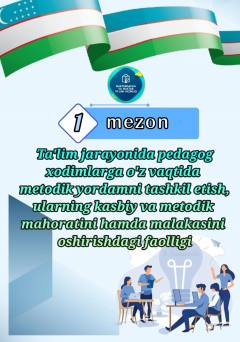

MBPedagoglarga metodik yordam ko'rsatish va kasbiy faollikni oshirish mezonlari.
Ushbu hujjat maktabgacha va maktab ta'limi tizimida pedagog xodimlarga metodik yordam ko'rsatish va ularning kasbiy faolligini oshirish mezonlariga bag'ishlangan. Unda ta'lim sifatini yaxshilash va metodik ta'minotni tashkil etish masalalari ko'rib chiqilgan.